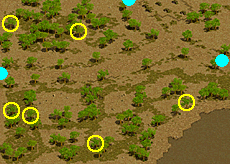

アリエルクエ
* 2018/10/4アップデートより、キャンセル可能なクエストに変更されました。
* 新キャラ作成時/クエスト再受諾は古都のNPC「クラカ」(22,105)から受諾できます。
| アリエルの薬 | |||||||||||||||||||||||||||||
|---|---|---|---|---|---|---|---|---|---|---|---|---|---|---|---|---|---|---|---|---|---|---|---|---|---|---|---|---|---|
ブルンネンシュティグ西側の出口に集まっている市民達、クライス、ポラック、エニ、クラカと話して入手した情報から、次の行動に移ろう。クライス、ポラック、エニ、クラカは、西側の出口から北東側に少し進むと会えるはずだ。 中央プラトン街道 / ブルンネンシュティグ入口付近にいるヘバという青年がアリエルについて一番良く知っているらしい。ヘバを尋ねてみよう。 ヘバに、アリエルが父のために作った薬をコボルトから取り戻すよう依頼された。中央プラトン街道 / ブルンネンシュティグ入口付近の病気のコボルトと戦ってアリエルの薬をヘバに渡そう。病気のコボルトは、街の西方にいる。 アリエルの薬を取り戻した。ヘバに持って行ってあげよう。 |
|||||||||||||||||||||||||||||
| 受諾場所 | 古都ブルンネンシュティグ | ||||||||||||||||||||||||||||
| 受諾条件 | Lv1 キャンセル不可 | ||||||||||||||||||||||||||||
| 報酬 | スモールヒールポーション2個 未熟なサンベリー [選択肢1]経験値500 [選択肢2]経験値600 |
||||||||||||||||||||||||||||
| 古都ブルンネンシュティグ | 新キャラクターを作成して古都ブルンネンシュティグに入ると自動で受諾 クラカ(20.106)へ |
||||||||||||||||||||||||||||
| 中央プラトン街道 / ブルンネンシュティグ入口付近 | ヘバ(173.72)へ 病気のコボルト(Lv1)を倒す ヘバへ [選択肢1]そうですね。私にはあまり意味がないですから。 → 経験値500 [選択肢2]それはできません。 → 経験値600  有効期限2日 有効期限2日 |
||||||||||||||||||||||||||||
| アリエルの薬：中和剤 | |||||||||||||||||||||||||||||
ヘバが薬を渡してくれるそうだ。アリエルを尋ねてみよう。 アリエルの薬で、二つのうち一つは無事に取り戻したが、他の一つが抜け落ちていた。先ほど病気のコボルトと戦っているうちに感じたが、残る一つの中和剤は病気のコボルトより少し強いやつが持っているはずだ。コボルトと戦ってみよう。コボルトも中央プラトン街道 / ブルンネンシュティグ入口付近にいる。 アリエルの薬：中和剤を獲得した。アリエルのもとに戻って渡そう。 アリエルのお父さんのアトボンが、私に話があると言う。彼と話をしてみよう。 亡者の憩い場に出沒するゴーストが魂の原石を持っていると言う。この魂の原石を手に入れてアトボンに渡そう。 魂の原石を見つけた。アトボンに渡そう。 |
|||||||||||||||||||||||||||||
| 受諾場所 | 中央プラトン街道 / ブルンネンシュティグ入口付近 ヘバ(173.72) | ||||||||||||||||||||||||||||
| 受諾条件 | Lv1 キャンセル不可 | ||||||||||||||||||||||||||||
| 報酬 | 経験値1200 スモールヒールポーション5個 | ||||||||||||||||||||||||||||
| 中央プラトン街道 / ブルンネンシュティグ入口付近 | アリエル(172.79)へ コボルト(Lv5)を倒す アリエルへ アトボン(170.75)へ ゴースト(Lv8)を倒す アトボンへ |
||||||||||||||||||||||||||||
| 両親の遺品 | |||||||||||||||||||||||||||||
アトボンは、がまん強さを試してみたいようだ。街の青年のポラックが困難な目にあっていると言うから、彼を捜して話をかけてみよう。ポラックは古都ブルンネンシュティグの中にいる。 ポラックの両親の遺品はが持っている可能性が大きい。昔の事だから一体を倒して手に入れられるようなものではない。指輪が出るまでリビングデッドを倒そう。リビングデッドは中央プラトン街道 / ブルンネンシュティグ入口付近、亡者の憩い場辺りにいる。 ポラックの大事な指輪を取り戻した。ポラックに返してあげよう。 ポラックが苦労していた問題を解決した。アトボンのもとに戻って、この事実を話してあげよう。 アリエルから新しい情報を聞こう。 |
|||||||||||||||||||||||||||||
| 受諾場所 | 中央プラトン街道 / ブルンネンシュティグ入口付近 アトボン(170.75) | ||||||||||||||||||||||||||||
| 受諾条件 | Lv1 キャンセル不可 | ||||||||||||||||||||||||||||
| 報酬 | 経験値2300 力Lv2防具 最高攻撃Lv2武器 未熟なサンベリー | ||||||||||||||||||||||||||||
| 古都ブルンネンシュティグ | ポラック(21.107)へ | ||||||||||||||||||||||||||||
| 中央プラトン街道 / ブルンネンシュティグ入口付近 | リビングデッド(Lv8)を倒す | ||||||||||||||||||||||||||||
| 古都ブルンネンシュティグ | ポラックへ | ||||||||||||||||||||||||||||
| 中央プラトン街道 / ブルンネンシュティグ入口付近 | アトボンへ アリエル(172.79)へ 力Lv2防具 [力Lv2](+2)ヘッドギア [力Lv2](+2)レザーアーマー [力Lv2](+2)戦闘用グローブ [力Lv2](+2)クロスシューズ [力Lv2](+2)胴巻き
|
||||||||||||||||||||||||||||
| 平和の剣 | |||||||||||||||||||||||||||||
アリエルに話を聞いてみると、ブルンネンシュティグのクラカには何事かあるようだった。ブルンネンシュティグの西側の出口付近にいるクラカを訪ねてみよう。 アリエルの頼みを聞き入れる一方で、シュトラセラトに行き、義足製作者についての情報を調査しよう。一応、アリエルの所に行って彼女の頼みを聞いてあげよう。 シュトラセラトに行く準備が済んだら、アトボンと話そう。 アトボンからペルデーノンドをもらった。アリエルとまた話してシュトラセラトで行く方法について聞いてみよう。 シュトラセラトの有名な酒場、ブルースビストロを訪ねるとルイズに会える。ルイズにペルデーノンドを届けてあげよう。テレポーターは、古都ブルンネンシュティグの中でミニマップを見ると、紫色に表示された所が見つかるので、そこがテレポーターのいる所だ。 |
|||||||||||||||||||||||||||||
| 受諾場所 | 中央プラトン街道 / ブルンネンシュティグ入口付近 アリエル(172.79) | ||||||||||||||||||||||||||||
| 受諾条件 | Lv1 キャンセル不可 | ||||||||||||||||||||||||||||
| 報酬 | 経験値5000 1万5000G ブルンネンシュティグテレポーター無料利用券 シュトラセラトテレポーター無料利用券 |
||||||||||||||||||||||||||||
| 古都ブルンネンシュティグ | クラカ(20.106)へ | ||||||||||||||||||||||||||||
| 中央プラトン街道 / ブルンネンシュティグ入口付近 | アリエルへ アトボン(170.75)へ アリエルへ |
||||||||||||||||||||||||||||
| ブルースビストロ | ルイズ(19.15)へ | ||||||||||||||||||||||||||||
| 発明家アシャ | |||||||||||||||||||||||||||||
義足については、地方警備隊詰め所にいる警備隊長タランが詳しく知っていると言う。彼を訪ねてみよう。 シュトラセラトには幸いにも義足を製作できる人がいると言う。警備隊長タランは、港街シュトラセラトの中にある高級ホテル オクトパスの上方面へ行けば発明家アシャがいると言う。彼女と話し合おう。 発明家アシャの頼みだ。公園にいる街の人々に発明家アシャの発明について聞いてみよう。公園は高級ホテル オクトパスの下側、井戸の辺りにある。 公園にいる街の人達から、発明家アシャの発明の件について、意見をすべて集めることができた。発明家アシャのもとに戻ろう。 発明家アシャの為に義足の材料を集めてあげよう。中央プラトン街道/グレートフォレスト入口付近の上方面へ行くと原野に出るので、そこに棲息する野原スパイダーと丘の方で出没するヤマイヌを倒して加工用高級蜘蛛の糸 10個とヤマイヌの骨 5個を手に入れなければならない。野原スパイダーとヤマイヌは少々強いモンスターなので回復剤を使って、慎重に相手をする方が良い。 義足の材料を全て手に入れた。シュトラセラトの発明家アシャのもとに戻って渡した後、アリエルに会いに行こう。 |
|||||||||||||||||||||||||||||
| 受諾場所 | ブルースビストロ ルイズ(19.15) | ||||||||||||||||||||||||||||
| 受諾条件 | Lv1 キャンセル不可 | ||||||||||||||||||||||||||||
| 報酬 | 経験値1万2050 帰還の魔石 未熟なサンベリー ブルンネンシュティグテレポーター無料利用券 シュトラセラトテレポーター無料利用券 |
||||||||||||||||||||||||||||
| 南フォーリンロード / シュトラセラト西部地域 | 警備隊長タラン(115.253)へ | ||||||||||||||||||||||||||||
| 港街シュトラセラト | 発明家アシャ(150.21)へ 街の人々へ おじいさん(121.124) ちびっこ(123.134 ) お嬢さん(127.126) おじさん(129.135) 発明家アシャへ |
||||||||||||||||||||||||||||
| 中央プラトン街道 / グレートフォレスト入口付近 | 野原スパイダー(Lv15)とヤマイヌ(Lv17)を倒す | ||||||||||||||||||||||||||||
| 港街シュトラセラト | 発明家アシャへ | ||||||||||||||||||||||||||||
| 中央プラトン街道 / ブルンネンシュティグ入口付近 | アリエル(172.79)へ | ||||||||||||||||||||||||||||
| 小さなプレゼント | |||||||||||||||||||||||||||||
アリエルがシュトラセラトを懐かしんでいる。故郷を思う彼女のために何かしてあげたいが。アトボンに一度聞いてみよう。 アリエルに似合う服をアリエルを知っている人々に聞いてみよう。聞いてみる人達の順番は、中央プラトン街道 / ブルンネンシュティグ入口付近のヘバとブルンネンシュティグのポラック、クライス、エニ、クラカだ。 彼らはアリエルがどんな服を着れば似合うか答えてくれた。アトボンのもとに戻って教えてあげよう。 テレポーターを使ってシュトラセラトに行き、アリエルの着る最高級ドレスを手に入れて来よう。シュトラセラトに関することは、そこに住んでいる発明家アシャやルイズがよく知っているはずだ。まずは発明家アシャに聞いてみよう。 発明家アシャは最高級ドレスがどこで手に入るのか分からないと言う。ブルースビストロの中にいるルイズに聞いてみよう。 最高級ドレスを作ることができるセブローは、南フォーリンロード / エルン山南部地域で衣裳に使う材料を集めているらしい。彼を捜してみよう。南フォーリンロード / エルン山南部地域は、南フォーリンロードの道に沿って歩いて行けば迷わないはずだ。セブローのところに行く前に、ルイズのプレゼントを受け取っておこう。ルイズのプレゼントは、港町シュトラセラトにいるテレポーター ケトンからもらうことができる。 |
|||||||||||||||||||||||||||||
| 受諾場所 | 中央プラトン街道 / ブルンネンシュティグ入口付近 アリエル(172.79) | ||||||||||||||||||||||||||||
| 受諾条件 | Lv1 キャンセル不可 | ||||||||||||||||||||||||||||
| 報酬 | 経験値1万5000 3万5000G ドレイクサモンセット簡易版 ブルンネンシュティグテレポーター無料利用券 シュトラセラトテレポーター無料利用券 |
||||||||||||||||||||||||||||
| 中央プラトン街道 / ブルンネンシュティグ入口付近 | アトボン(170.75)へ ヘバ(173.72)へ |
||||||||||||||||||||||||||||
| 古都ブルンネンシュティグ | ポラック(21.107)、クライス(21.104)、エニ(22.106)、クラカ(20.106)へ | ||||||||||||||||||||||||||||
| 中央プラトン街道 / ブルンネンシュティグ入口付近 | アトボンへ | ||||||||||||||||||||||||||||
| 港街シュトラセラト | 発明家アシャ(150.21)へ | ||||||||||||||||||||||||||||
| ブルースビストロ | ルイズ(19.15)へ | ||||||||||||||||||||||||||||
| 港街シュトラセラト | ケトン(70.57)へ、ドレイクサモンセット簡易版を貰う 有効期限3日、回数制限なし 有効期限3日、回数制限なし
|
||||||||||||||||||||||||||||
| 南フォーリンロード / エルン山南部地域 | セブロー(35.175)へ | ||||||||||||||||||||||||||||
| 他人のために | |||||||||||||||||||||||||||||
セブローは悲しい目をしている彼女の事を聞いてくれと頼んだ。彼女は南フォーリンロード / エルン山南部地域の、やや小さい沼の隣にいると言う。 悲しい恋愛をしているエドのために、化け物になってしまったギルバートを元に戻せる薬を手に入れるため、魔法都市スマグのウィザードに会おう。そのウィザードはスマグ旅館の近くにいると言う。 呪いを解く薬の材料を手に入れなければならない。ブルンネンシュティグ南側にいるギルディル川 沼地洞窟地下1階のオクトパストンから首なし怪物の樹液 15個と、地下2階のイリュージョンから精神の粉と、メロウからメロウの背びれ 10個を手に入れて、南フォーリンロード / テレット・トンネル出口付近のどこかにある浄化の果実を手に入れた後、魔法都市スマグのカラに渡そう。 カラに呪いを解く薬をもらった。エドに一刻も早く渡そう。 エドに呪いを解く薬を渡した。南フォーリンロード / エルン山南部地域のセブローのところに戻って、現在までの報告とアリエルのドレスの進捗をきいてみよう。 |
|||||||||||||||||||||||||||||
| 受諾場所 | 南フォーリンロード / エルン山南部地域 セブロー(35.175) | ||||||||||||||||||||||||||||
| 受諾条件 | Lv1 キャンセル不可 | ||||||||||||||||||||||||||||
| 報酬 | 経験値3万 冒険家協会の羅針盤‘スマグ’ | ||||||||||||||||||||||||||||
| 南フォーリンロード / エルン山南部地域 | エド(74.70)へ | ||||||||||||||||||||||||||||
| 魔法都市スマグ | カラ(81.71)へ | ||||||||||||||||||||||||||||
| ギルディル川 沼地洞窟 Ｂ１ | オクトパストン(Lv17)を倒す | ||||||||||||||||||||||||||||
| ギルディル川 沼地洞窟 Ｂ２ | イリュージョン(Lv21)とメロウ(Lv30)を倒す | ||||||||||||||||||||||||||||
| 南フォーリンロード / テレット・トンネル出口付近 | 浄化の果実は木をクリック (3.24)(5.133)(17.137)(46.28)(55.171)(110.120)のどれでも可  |
||||||||||||||||||||||||||||
| 魔法都市スマグ | カラへ | ||||||||||||||||||||||||||||
| 南フォーリンロード / エルン山南部地域 | エドへ セブローへ | ||||||||||||||||||||||||||||
| 悲しい話 | |||||||||||||||||||||||||||||
考えが足りなかった。エドが今、洞窟に入って行ったら間違いなく危険にあうはずだ。今すぐ洞窟に戻ってエドを助けよう。 エドが化け物になったギルバートに会えるように道を確保しよう。洞窟内のモンスター35匹を倒そう。 エドがギルバートのところまで安全に進むことができるように、周辺の化け物たちの数を減らした。エドに知らせてあげよう。 エドがギルバートに会う間、セブローのもとに戻ってアリエルのドレス製作が完了したのか聞いてみよう。 アリエルのドレスはもう少ししたら製作が完了すると言う。その間、エドのもとに戻って状況を確認しよう。 |
|||||||||||||||||||||||||||||
| 受諾場所 | 南フォーリンロード / エルン山南部地域 セブロー(35.175) | ||||||||||||||||||||||||||||
| 受諾条件 | Lv1 キャンセル不可 | ||||||||||||||||||||||||||||
| 報酬 | 経験値3万 | ||||||||||||||||||||||||||||
| 南フォーリンロード / エルン山南部地域 | エド(74.70)へ、ワープ | ||||||||||||||||||||||||||||
| エルン山南部地下洞窟 Ｂ１ | モンスターを35匹倒す、ギルバート以外のどれでも可 | ||||||||||||||||||||||||||||
| 南フォーリンロード / エルン山南部地域 | エドへ セブローへ エドへ [選択肢]ギルバートのために、彼に安息を与える。 → 物語の結末 エルン山南部地下洞窟 Ｂ１へワープ [選択肢]セブローの所に戻り、アリエルのドレスを受け取って、アリエルのもとに戻る。 → ドレス配達 |
||||||||||||||||||||||||||||
| 物語の結末 | |||||||||||||||||||||||||||||
|
生きている時、人々を助けることが好きだったギルバートはもう永遠に人間に戻ることができない化け物になってしまった。彼のために安息を与えてあげよう。 ギルバートは、おだやかに亡くなった。エドに、この事実を話してあげよう。 南フォーリンロード / エルン山南部地域のセブローのところに戻り報告をして、アリエルのドレスを受け取ろう。 アリエルにドレスをプレゼントするため、中央プラトン街道 / ブルンネンシュティグ入口付近に行き、アトボンに会おう。 |
|||||||||||||||||||||||||||||
| 受諾場所 | 南フォーリンロード / エルン山南部地域 エド(74.70) | ||||||||||||||||||||||||||||
| 受諾条件 | Lv1 キャンセル不可 | ||||||||||||||||||||||||||||
| 報酬 | 経験値4万5000 未熟なサンベリー3個 洗練された刃油DX[E]5個 洗練された鎧油DX[E]5個 |
||||||||||||||||||||||||||||
| エルン山南部地下洞窟 Ｂ１ | ギルバート(Lv5)Zinを倒す | ||||||||||||||||||||||||||||
| 南フォーリンロード / エルン山南部地域 | エドへ セブロー(35.175)へ |
||||||||||||||||||||||||||||
| 中央プラトン街道 / ブルンネンシュティグ入口付近 | アトボン(170.75)へ | ||||||||||||||||||||||||||||
| ドレス配達 | |||||||||||||||||||||||||||||
残念だが、これ以上エドのためにしてあげられる事は無いだろう。アリエルのドレスを受け取るため、セブローのもとに戻ろう。 アリエルのドレスを手に入れた。中央プラトン街道 / ブルンネンシュティグ入口付近に戻り、アトボンに渡そう。 |
|||||||||||||||||||||||||||||
| 受諾場所 | 南フォーリンロード / エルン山南部地域 エド(74.70) | ||||||||||||||||||||||||||||
| 受諾条件 | Lv1 キャンセル不可 | ||||||||||||||||||||||||||||
| 報酬 | 経験値5000 未熟なサンベリー2個 洗練された刃油DX[E]5個 洗練された鎧油DX[E]5個 |
||||||||||||||||||||||||||||
| 南フォーリンロード / エルン山南部地域 | セブロー(35.175)へ、3万5000G払う | ||||||||||||||||||||||||||||
| 中央プラトン街道 / ブルンネンシュティグ入口付近 | アトボン(170.75)へ | ||||||||||||||||||||||||||||
[参考] Yotsuba Quest DataBase